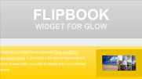
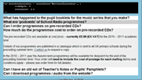
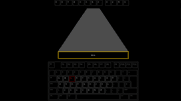
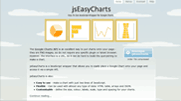

Hello, I'm Tom Maslen, a web designer / web developer / database programmer / whatever living in Corby, Northants.
This is my almost useless space on the web. It is a place for me to showcase recent work and experiments. Check out the links below the examples of work (in the large red section) to see what I find interesting on the web.
I now code primarily in HTML, JavaScript and PHP but have in a previous life constructed web applications in .NET with SQL Server and Postgres.
Any views expressed on this website are my own and not those of any public broadcast company that I may or may not work for.
flipBook widget for Glow
FlipBook is a widget to be used with Glow, the BBC's Javascript library. It gives you a fun way of interacting with many images when you need to display them in a confined space.
Accordion widget for Glow (still in development)
This is an accordion widget to be used with Glow, the BBC's JavaScript library. You can see it in action at bbc.co.uk/schoolradio/.
twitterDraw widget for jQuery (still in development)
TwitterDraw is the (ultimately useless, but) easy to use jQuery widget for putting any tweet onto your page using a tidy draw-like widget.
BBC slideshow widget (as seen on /doctorwho)
One of the widgets available from the BBC Images project. You can use this widget to display a gallery of images, all from one simple to use API.
www.bbc.co.uk/glow/
demos/keyboardhero/

Made this to demo how easy it is to use animations and events with Glow. The first version used a 500kb dictionary, which was later swapped for a 30kb alternative.
Canvas pattern maker
Started doodling with the canvas element. Only works with canvas enabled browsers. Position the mouse on the lefthand side to display the control panel.
bbc.co.uk/glow/
Worked in the Glow team from version 1.4 til 1.6. Helped to launch Glow as an open source product.
jsEasyCharts
This is a JavaScript API to help you put Google Charts into your page. Google Charts is really powerful, but the interface is a little complicated. So I put this JavaScript wrapper around it.